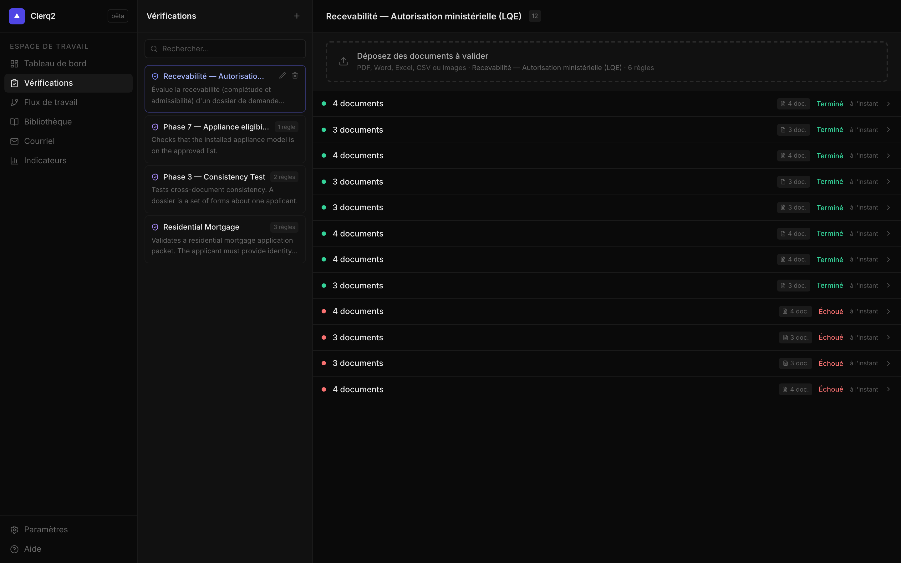

A1
Lecture et interprétation multi-formats
CouvertL'assistant doit lire et interpréter les documents d'un dossier dans des formats variés (CSV, Excel, PDF, Word) et les traiter ensemble comme un seul dossier. AOP 25320-S — §2.2.1.1
Une vérification accepte plusieurs fichiers déposés ensemble — PDF, Word, Excel, CSV ou images — et les traite comme un dossier unique. Les PDF/images sont rendus en pages, le texte des fichiers Word/Excel/CSV est extrait, et l'ensemble est soumis au moteur d'analyse.
